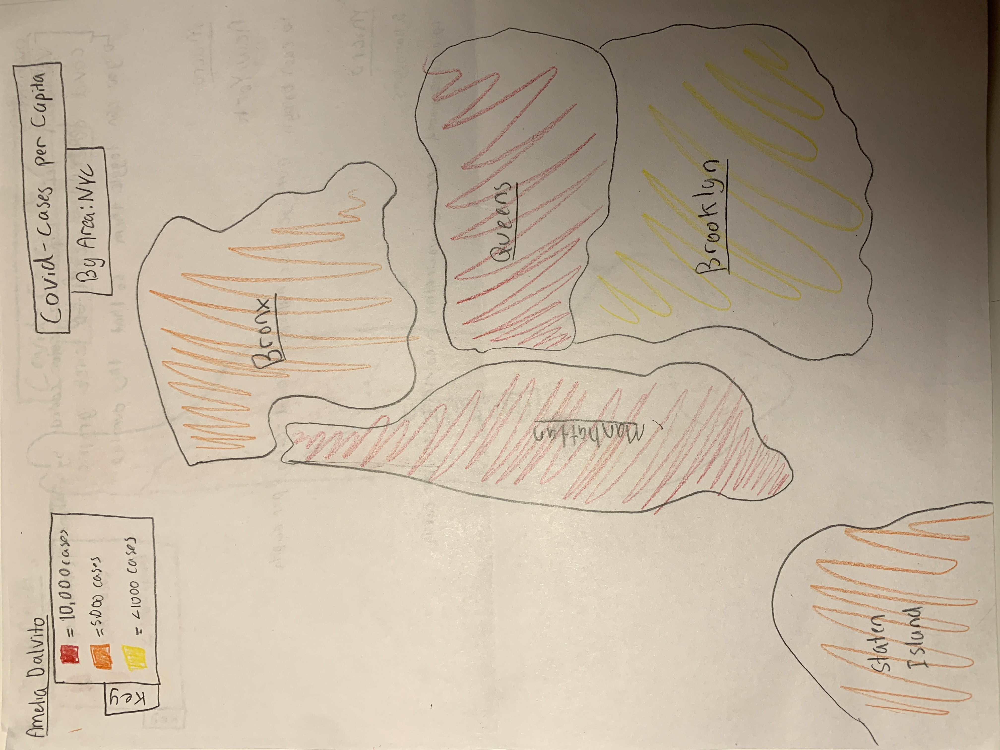
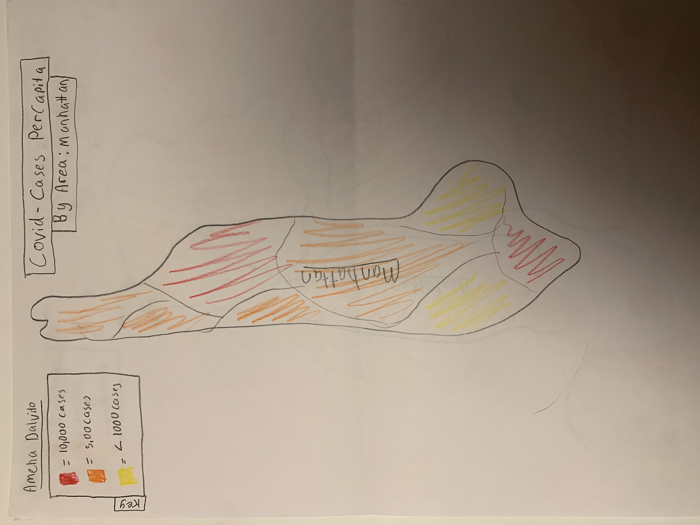

About Page-Amelia and Taran
4 Prototype Sketches




Sketch Explanations
Amelia and Taran's explantions
Final Design
Because our prototypes were fairly similar, it was easy to settle on a unified approach for the website. Our website will examine covid cases per capita, and vaccinations per capita. On the macro level, we will represent the average covid cases and vaccinations for each borough. We will represent this data by displaying a map of NYC where each borough is a certain color based on how many covid cases there are. On the micro level, we will create two pages for each of the five boroughs. For each borough one page will be a zoomed in map of said borough that is colored in based on the covid cases for each neighborhood. The second page for each borough will be a zoomed in map of said borough that is colored in based on the vaccination rate for each neighborhood. For each page in our website, we might include a data table alongside the maps. We decided to take this approach, because it seemed achievable to make, and it seemed like it would be understandable to users.
!!ADD SOMETHING ABOUT WHICH COMPONENTS OF THE PROTOTYPES WE DECIDED TO KEEP
Vocabulary needed
Per Capita= for each person
Work Distribution
Our group will work together on the macro "walking skeleton". For the micro "walking skeleton" Amelia will complete the vacination rate skeleton, and Taran will complete the covid cases skeleton.
-
Pipeline Graphic